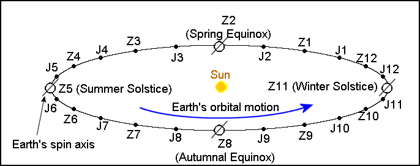

First draft: October 2018 Last major update: February 2019
As seen on Earth, the Sun moves eastward relative to stars in the celestial sphere with a period of one year. The path of the Sun on the celestial sphere is a great circle and is called the ecliptic. This is Earth's orbital plane projected onto the celestial sphere. In the past, Chinese astronomers determined the position of the Sun in the ecliptic using a gnomon. It measures the length of the shadow of an upright pole cast by the Sun at solar noon. Here solar noon means the time of a day when the Sun is due south (at locations north of the tropic of Cancer). The day at which the shadow at solar noon is the longest is called dōngzhì (冬至), or winter solstice. The period between two successive winter solstices is called a suì (歲), whereas the period between two successive Chinese New Year days is called a nián (年). Today, suì is rarely used to measure time, except when talking about a person's age, and nián generally refers to a year in Gregorian calendar.
Starting from winter solstice, the ecliptic can be divided into 24 uniformly-spaced sections. There are 24 boundary points separating the 24 sections. The times of the 24 solar terms (二十四節氣) are defined to be the times when the Sun reaches these 24 points on the ecliptic. These are 24 seasonal markers invented by the ancient Chinese. The 24 solar terms are thus generalizations of the equinoxes and solstices, which divide the ecliptic into four sections. We now know that the apparent motion of the Sun is caused by Earth's orbital motion around the Sun. So we can think of the 24 solar terms as the times when the Earth passes 24 points in its orbit, as shown in the figure below. Note that Earth's spin axis is not perpendicular to its orbital plane. It is this tilt that causes seasons and the varying shadow lengths at solar noons over the course of a year.

In modern astronomical parlance, the 24 solar terms are defined as the times when the apparent geocentric ecliptic longitude of the Sun, λs, reaches integral multiples of 15°. Starting from winter solstice, the odd-numbered solar terms are called the major solar terms (zhōngqì 中氣), and the even-numbered solar terms are called minor solar terms (jiéqì 節氣). The following table lists the 24 solar terms, the English translation of their names and the Sun's apparent geocentric longitude. A major solar term is labelled by Z followed by a number, and a minor solar term is labelled by J followed by a number. This labelling is adopted from Aslaksen's article The Mathematics of the Chinese Calendar and Section 15.8.3 of the book Explanatory Supplement to the Astronomical Almanac (third edition). Here Z stands for Zhōngqì and J stands for Jiéqì. The number indicates the month assoicated with the solar term. For example, Z3 is the Zhōngqì associated with month 3 (三月中); J4 is the Jiéqì associated with month 4 (四月節), and so on. These alternative names of solar terms were widely used in the imperial calendars published in the Ming and Qing dynasties.
| Solar Term | Name | Sun's Longitude λs | Approximate Gregorian Date |
|---|---|---|---|
| J1 (立春) | Beginning of Spring | 315° | Feb. 4 |
| Z1 (雨水) | Rain Water | 330° | Feb. 19 |
| J2 (驚蟄) | Waking of Insects | 345° | Mar. 6 |
| Z2 (春分) | Spring Equinox | 0° | Mar. 21 |
| J3 (清明) | Pure Brightness | 15° | Apr. 5 |
| Z3 (穀雨) | Grain Rain | 30° | Apr. 20 |
| J4 (立夏) | Beginning of Summer | 45° | May 6 |
| Z4 (小滿) | Grain Full | 60° | May 21 |
| J5 (芒種) | Grain in Ear | 75° | June 6 |
| Z5 (夏至) | Summer Solstice | 90° | June 22 |
| J6 (小暑) | Slight Heat | 105° | July 7 |
| Z6 (大暑) | Great Heat | 120° | July 23 |
| J7 (立秋) | Beginning of Autumn | 135° | Aug. 8 |
| Z7 (處暑) | Limit of Heat | 150° | Aug. 23 |
| J8 (白露) | White Dew | 165° | Sep. 8 |
| Z8 (秋分) | Autumnal Equinox | 180° | Sep. 23 |
| J9 (寒露) | Cold Dew | 195° | Oct. 8 |
| Z9 (霜降) | Descent of Frost | 210° | Oct. 23 |
| J10 (立冬) | Beginning of Winter | 225° | Nov. 7 |
| Z10 (小雪) | Slight Snow | 240° | Nov. 22 |
| J11 (大雪) | Great Snow | 255° | Dec. 7 |
| Z11 (冬至) | Winter Solstice | 270° | Dec. 22 |
| J12 (小寒) | Slight Cold | 285° | Jan. 6 |
| Z12 (大寒) | Great Cold | 300° | Jan. 20 |
Note that J1 is not necessarily in the first month in the Chinese calendar; J2 is not necessarily in month 2 and so on. However, Z1 is in month 1 most of the time, Z2 is in month 2 most of the time, and so on. One of the rules of modern Chinese calendar stipulates that Z11 must be in month 11.
Note that the 24 solar terms are based on the position of the Sun only. Gregorian calendar is also arranged based on the Sun's position. As a result, the Gregorian dates of the 24 solar terms are almost the same every year, give or take one or two days. In the past, dates of 24 solar terms were published every year in the Chinese calendar. Many people therefore think that 24 solar terms are related to lunar calendar, which is wrong. The 24 solar terms are used to insert leap (intercalary) months in the Chinese calendar to keep it in sync with seasons, as explained in the Chinese Calendar Rules page.
The 24 solar terms defined above are based on the position of the Sun on the ecliptic and are called dìngqì (定氣). Before 1645, the 24 solar terms were calculated by dividing the tropical year evenly into 24 periods. The time between two solar terms was therefore a constant. This is called píngqì (平氣). In other words, the solar terms calculated using the píngqì rule are based on the mean motion of the Sun.
Under the píngqì rule, the time between two major solar terms is (365.2422/12) days = 30.44 days. The Chinese calendar assigns the day of lunar conjunction (new moon) as the first day of a Chinese month. As a result, even if a major solar term (defined using píngqì) occurs at midnight on the day of a new moon, the next major solar term must occur in the following Chinese month since there can only be 30 days in a month. It follows that there can only be at most one major solar term in a month. Before 1645, the 12 major solar terms were used to define the numerical order of a Chinese month: the Chinese month containing Z1 was defined as month 1; the month containing Z2 was defined as month 2 and so on. If a Chinese month did not contain a major solar term, it was desnigated as a leap (intercalary) month. This is the famous "no zhōngqì rule" for inserting leap months.
When dìngqì was adopted in 1645, the old system no longer works because it is now possible to have two major solar terms occurring in a month and more than one month containing no major solar term in a suì. This is because the motion of the Sun on the ecliptic is not uniform. It moves faster when the Earth is closer to the Sun and slower when the Earth is farther from the Sun. The time between two major solar terms (defined using dìngqì) can vary between 29.44 days and 31.44 days. It is therefore possible to squeeze two major solar terms between the dates of two new moons when the two major solar terms are separated by less than 30 days. The numerical order of a month has to be determined by a slightly complicated rule (see Chinese calendar rules page). However, having two major solar terms within a month is very rare. It only occurs once or twice in a century. So most of the times Z1 is in month 1; Z2 is in month 2 and so on.
The computation of the times of the 24 solar terms defined by píngqì is very easy. If we know the time of a particular solar term, the times of the other solar terms are determined by adding integer multiples of (tropical year)/24. However, there had been many versions of calendars developed over the Chinese history. Each time a new calendar was developed, the time of a particular solar term was adjusted to match the obseravtional data. In addition, the adopted length of a tropical year varied slightly from calendars to calendars. Hence, the solar terms (defined by píngqì) over the history of China may be computed by a piecewise linear function.